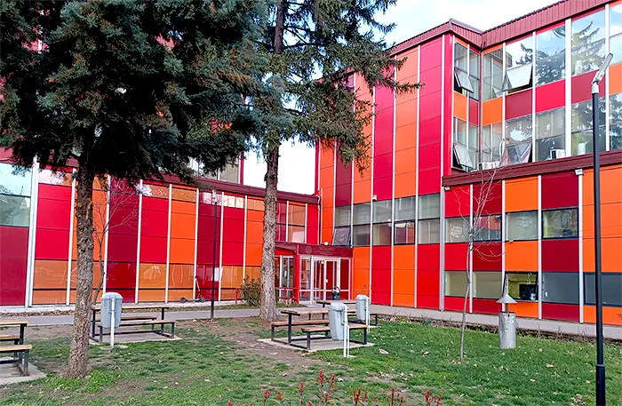
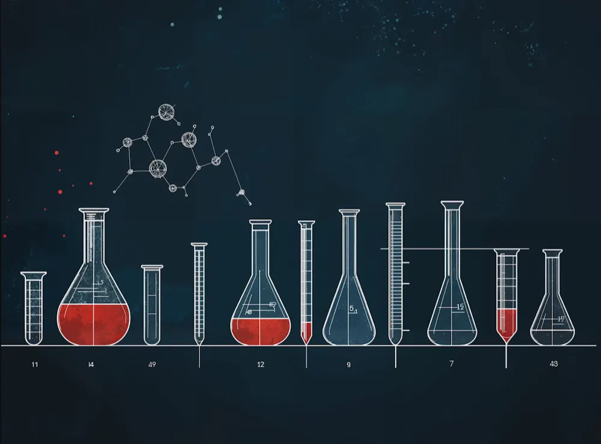

Историјат
Од училишната зграда што Полска ја подари на Скопје по земјотресот во 1963 година, до Регионален центар за стручно образование и обука.
По катастрофалниот земјотрес во 1963 година кој Градот Скопје го остави во урнатини, голем број земји од светот ја искажаа својата хуманост и солидарност, ни подадоа рака на поддршка и почит. Знаејќи ја моќта на образованието, НР Полска ни подарува училишна зграда комплетно опремена со наставни средства и помагала.
Со Решение на Градското собрание на Скопје со дел. број 22565/1 од 18.09.1969 година, училиштето беше верифицирано како Хемиски училишен центар „Марија Кири – Склодовска“ – Скопје, за хемиско-технолошка струка и образование на кадри за хемиската индустрија. Со развојот на хемиската индустрија се правеа промени прилагодувајќи се на потребите на компаниите, односно на пазарот на трудот.

Клучни датуми
- 1969
Со решение бр. 22565/1 од 18.09.1969 година, училиштето е верифицирано како Хемиски училишен центар „Марија Кири – Склодовска“.
- 1997
Се преименува во Државно средно хемиско-технолошко училиште „Марија Кири – Склодовска“.
- 2006
Продолжува со работа како Средно училиште на Град Скопје „Марија Кири – Склодовска“.
- 2009
Училиштето е носител на 13-та Ноемвриска награда за успешна работа во образованието и воспитанието.
- 2026
Од 01.09.2026 година работи како Државно средно училиште – Регионален центар за стручно образование и обука.
Училиштето во 1997 година се преименува како Државно средно хемиско-технолошко училиште „Марија Кири – Склодовска“ – Скопје, а од 2006 година како Средно училиште на Град Скопје „Марија Кири – Склодовска“ – Скопје.
Нов статус од 01.09.2026 година
Согласно Одлуката за преземање на основачките права и обврски над Средното училиште на Град Скопје „Марија Кири – Склодовска“ – Скопје со дел. број 57-5291/7 од 30.06.2026 година, објавена во „Службен весник на Република Македонија“ број 147/26, донесена од страна на Владата на Република Северна Македонија, сметано од 01.09.2026 година училиштето продолжува со работа како Државно средно училиште – Регионален центар за стручно образование и обука „Марија Кири – Склодовска“ – Скопје.
Соработката на Република Полска со училиштето и понатаму продолжува, снабдувајќи го со нагледни средства и помагала за стручното образование. Како признание за успешна работа на полето на образованието и воспитанието е тоа што училиштето е носител на 13-та Ноемвриска награда во 2009 година.
Денес, во училиштето се образуваат ученици со четиригодишно и тригодишно стручно образование од хемиско-технолошка струка (сектор: хемија и технологија), струка лични услуги (сектор: лични и други услуги) и здравствена струка (сектор: здравство и социјална заштита).

Сегашните ученици и вработени се трудат со својата работа и постигнувања да бидат достојни наследници на оние ентузијасти кои ги поставија темелите на Хемискиот училишен центар.
Тие се трудат да постават и достигнат нови повисоки цели и да се соочат со предизвиците на современите барања кои стојат пред средното стручно образование, свесни на фактите дека образованието е основа и услов за секој напредок, личен и општествен. Вработените не се плашат да го вложат својот труд, ентузијазам и креативност за да ја следат визијата на училиштето.

Контакт
- Адреса
- бул. „Трета Македонска Бригада“ бр. 63-А
1000 Скопје, општина Аеродром - Телефон
- +389 2 2403 141